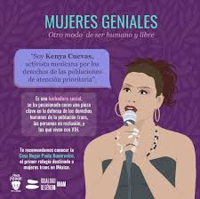

Activista mexicana y defensora de los derechos de las personas trans
Kenya Cuevas es una mujer trans mexicana reconocida por su incansable labor en la defensa de los derechos humanos, especialmente de las personas trans y en situación de calle. Su activismo comenzó tras el asesinato de su amiga Paola Buenrostro en 2016, un crimen de odio que marcó su vida y la motivó a alzar la voz en busca de justicia.
Desde entonces, fundó la Casa de las Muñecas Tiresias, una organización que brinda refugio, atención médica, apoyo psicológico y jurídico a mujeres trans, personas con VIH, personas en situación de calle y trabajadoras sexuales.
Kenya también ha trabajado por la memoria de las mujeres trans asesinadas, colocando placas conmemorativas y luchando contra la impunidad. Su valentía y determinación la han convertido en una referente del activismo en México y Latinoamérica.
Kenya Cuevas ha transformado el dolor en acción social. Gracias a su trabajo, cientos de personas trans han encontrado apoyo, visibilidad y esperanza. Su lucha por la justicia y los derechos humanos continúa inspirando a nuevas generaciones 